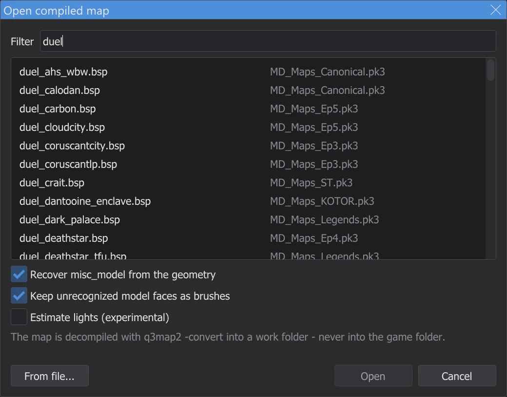
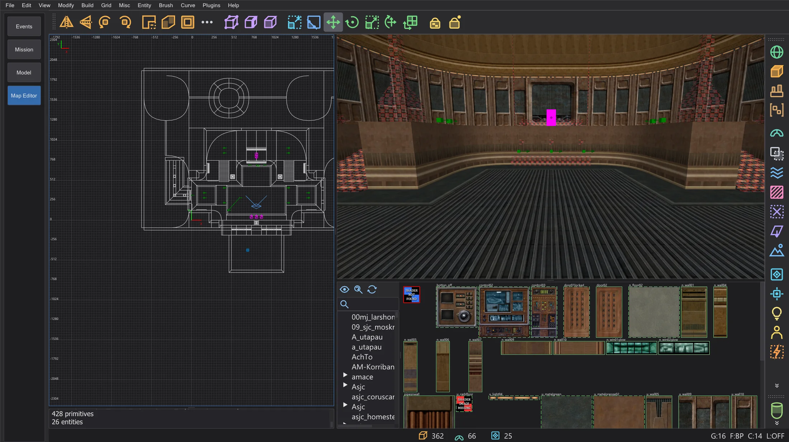
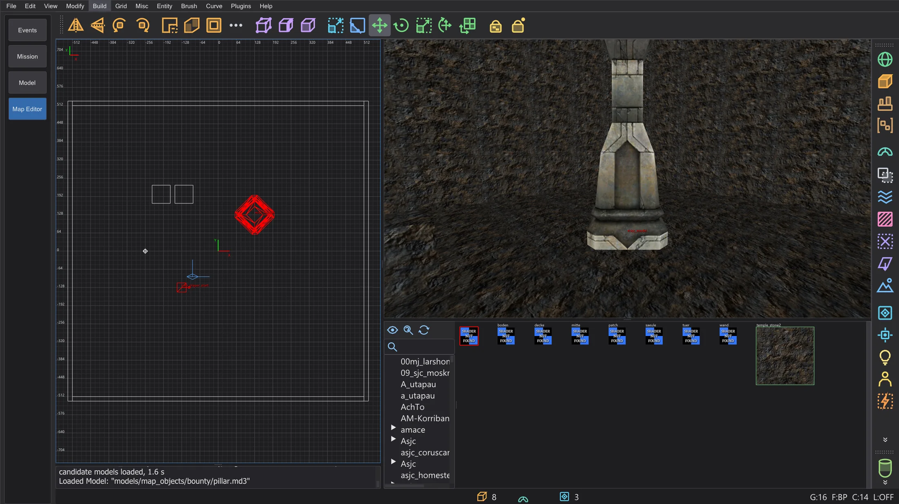
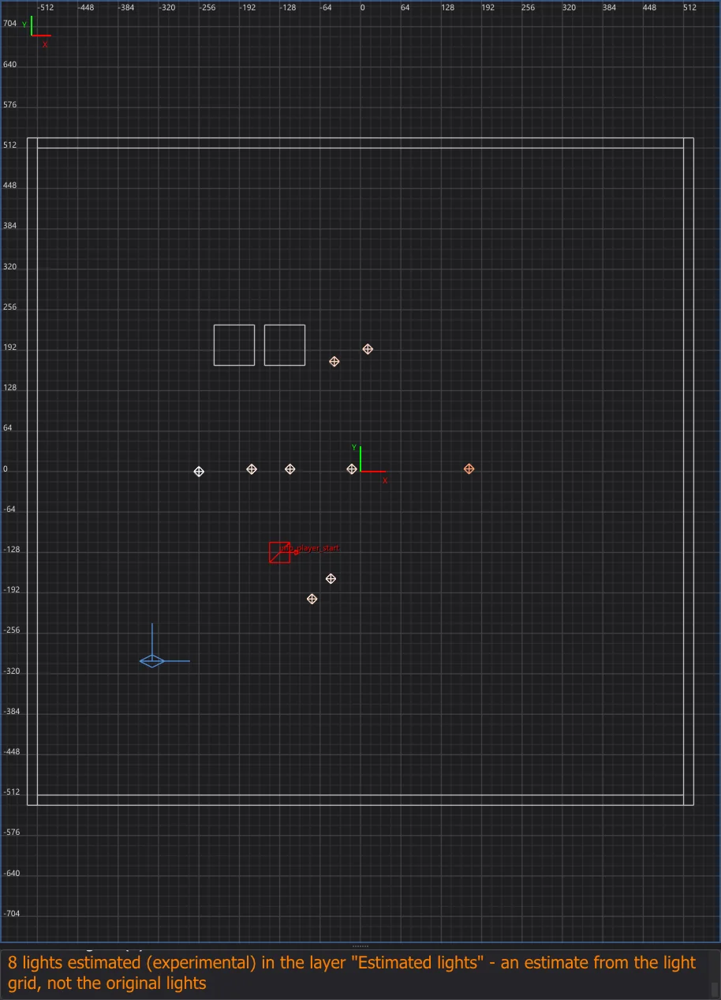
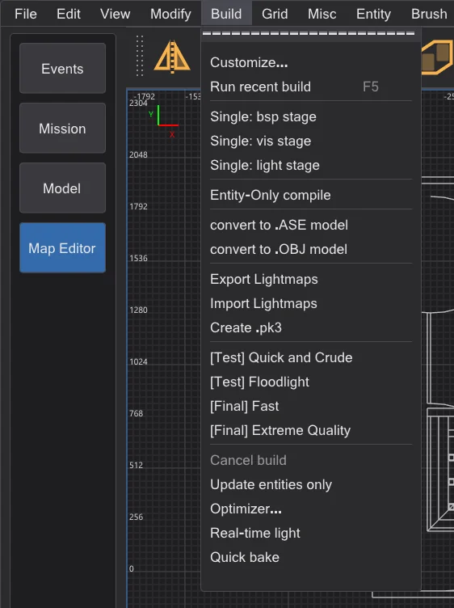

Map editor: opening and changing finished maps
Open a compiled map of the game - straight from its .pk3 - with File > Open .bsp, change its entities and write them back with Build > Update entities only: the geometry and the original light stay byte for byte as they are.
Opening a compiled map#

duel - each map next to the archive the game loads it from; below the list the options for misc_model and lights.- 1
File > Open .bsp lists every map (
maps/…/*.bsp) of the game folders as the game sees it: for each name only the copy the game would load - a mod beforebase, a later .pk3 before an earlier one. The right column names the .pk3 or the folder. Type part of the name into Filter. - 2
Double-click a map or select it and click Open. From file opens a .bsp from anywhere on disk instead.
- 3
The map editor copies the .bsp into a work folder in the settings folder (
karte_bsp\<name>) - never into the game folder - and turns it back into a map with q3map2-convert, as NetRadiant-Custom does when it imports a .bsp. Then the map is open like a.map. If the open map has unsaved changes, the editor asks first.
mp/duel1 opened from the game's .pk3: 362 brushes, 66 patches and 26 entities from the .bsp; in the background 14 misc_modelwere found again and 938 triangles of models that were not found became 779 thin brushes in the layer Unrecognized model faces (see Recovering misc_model from the geometry).

A compiled map is not the original .map. Brushes with their textures, patches and entities come back. What q3map2 bakes into the .bsp does not: the models of misc_model entities, decals and the light entities - maps compiled for Jedi Academy normally no longer contain them, their light exists only in the lightmaps and the light grid. On some faces the texture alignment can differ slightly. Compiled again with LIGHT, such a map gets new light, calculated without the original lights. To change only entities - spawn points, NPCs, items, scripts, keys - keep the original light instead. Three own functions bring back more: the editor data of a map built with Keep editor data (everything, exactly), misc_model from the geometry and estimated lights.
What a .bsp no longer contains#
q3map2 removes some entities while it builds the map, so they cannot come back from the .bsp - this is not a fault of the conversion. An example is a Jedi Academy map from a tester: of 388 lights 9 came back, of 265 misc_model none, all 233 info_null are there.
- Lights without a targetname: only lights that can be switched in the game stay in the .bsp; q3map2 strips all others after calculating their light into the lightmaps (q3map2
writebsp.cpp, SetLightStyles). In the example these are the 9 lights with a targetname. ⟦Estimate lights (experimental)⟧ places estimated lights instead. misc_model: q3map2 bakes the model into the geometry of the map and removes the entity (model.cpp, AddTriangleModels;bspfile_abstract.cpp, UnparseEntities - unless the map was built with-keepmodels). The same happens to_decaland_skybox. ⟦Recover misc_model from the geometry⟧ finds the models in the geometry again.func_group: its brushes go into worldspawn (map.cpp, MoveBrushesToWorld), the group itself is gone.- Layers, group keys and the exact texture alignment: the .bsp has no layers; the keys of a
func_groupgo with the group; the alignment of a brush face is rebuilt from the vertices of its surface (-convert) and can differ slightly. - Faces without a brush: the triangles of a model whose file is missing and faces of non-solid brushes are in the .bsp only as drawing surfaces. They come back neither as brush nor as model; ⟦Keep unrecognized model faces as brushes⟧ keeps them as thin brushes.
- Everything else stays, for example
info_null(the targets of spotlights), triggers, doors and their keys. Hint, areaportal and skip brushes come back structural, as in the source.
Keeping the editor data#
For your own maps nothing has to get lost. Switch on Build > Keep editor data (off by default, not in NetRadiant-Custom) before you build:
- Every BSP step runs with
-keeplights: all lights stay in the entity lump. The game frees lights without a targetname when the map starts (OpenJKSP_light), so they cost nothing in the game; the optimizer counts their bytes in the check Entity lump and its limits. - After the build
<map>.bhedlies next to the .bsp: the exact source map with a fingerprint of the geometry of this .bsp.misc_modeldoes not go into the .bsp - the game would spawn it as an empty entity - but into this file. - File > Open .bsp finds the file next to the .bsp - also in the .pk3 files of the game - and, if the fingerprint fits, opens the source map instead of a decompile:
misc_model,func_group, texture alignment, detail and layers are back. If it belongs to another build, the console says so and the .bsp is decompiled as usual.
Recovering misc_model from the geometry#
Without editor data the models are only triangles in the .bsp. With Recover misc_model from the geometry in the dialog Open compiled map (on by default, not in NetRadiant-Custom) the editor looks for them after opening, in the background with a progress window:
- 1
The candidates are the model files of the game in the folders of the map's shaders. bhed_q3map2 loads them exactly as the compiler did (
-bhedmodels, the same model loader as-bsp). - 2
Each model is searched in the triangles of the .bsp - also when q3map2 merged it into larger surfaces (
forcemeta). Only exact matches become amisc_modelwithorigin,angleoranglesandmodelscale; the console names the largest vertex error. - 3
The models come as one undo step. Their triangles are not doubled: the decompile has no brushes for them, so Update entities only still works. If brushes or patches change before the search is done (for example with Import), the result is dropped - open the .bsp again.

misc_model with its angle and scale.On jeditemple_garden (tester map, source known) all 265 of 265 misc_model came back with no wrong model; the largest difference to the source is 0.002 units in the position and 0.0002° in the angle. Original maps of the game have models from other folders too; what is not found stays triangles.
system/nodraw on their sides in the layer Unrecognized model faces. Check them - hide the layer or delete what you do not need; they can double geometry that exists in another form.Estimating lights (experimental)#
Estimate lights (experimental) in the dialog Open compiled map (off by default, not in NetRadiant-Custom) places lights where the light grid of the .bsp says light comes from: from each grid point the directed light is followed back until it hits geometry, the points where many rays meet become lights, their strength and colour come from the grid. They go into the layer Estimated lights and carry the key _bhed_geschaetzt 1 (q3map2 and the game ignore it). Lights that stayed in the .bsp are not doubled.

Keeping the original light#

- 1
Change entities: keys and values (also of worldspawn), move, add or delete point entities such as spawn points, NPC spawners and items, change the keys of brush entities.
- 2
Build > Update entities only saves the map, takes a fresh copy of the original .bsp and runs q3map2
-onlyentsin the background (output in the console, as when building). Only the entity lump is rebuilt; the editor puts it into the copy of the original, so every other lump - geometry, lightmaps, light grid, visibility - stays byte for byte as it was. - 3
The console confirms it with Entities updated and the number of unchanged lumps. The result is
<name>.bspin the work folder; the untouched original stays next to it as<name>_original.bsp. - 4
To play it, copy the new .bsp into the
mapsfolder of the game as described on Map editor: compiling the map - for a map from a .pk3 best under a new name, so the original in the .pk3 stays as it is (for exampleduel1_neu.bspinmaps\mp, started withdevmap mp/duel1_neu).
misc_model are part of the geometry. If any of them changed since the map was opened, Update entities only does not run q3map2; the box Update entities only explains that the map has to be built again with BSP, VIS and LIGHT - with new light. Undo brings the geometry back to the original, and the entry works again.-keeplights so that they stay. NetRadiant-Custom's own Entity-Only compile in the same menu also runs -onlyents, but without the check and without putting the result into the original - with Jedi Outcast maps it can drop lights and rewrite the light grid. For a map opened with Open .bsp, use Update entities only.